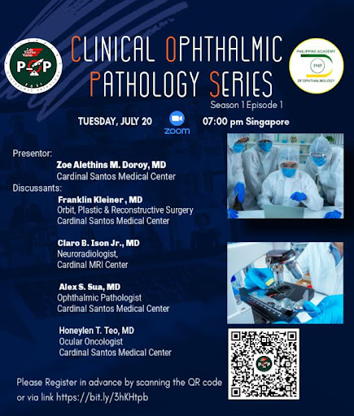
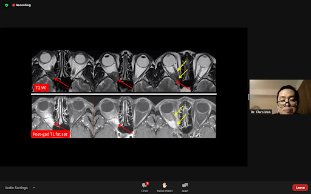
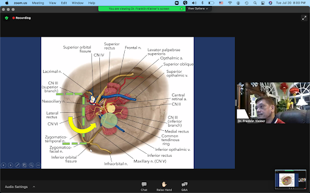
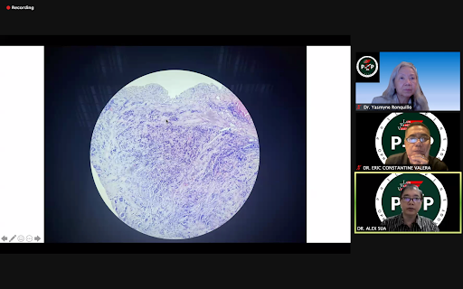
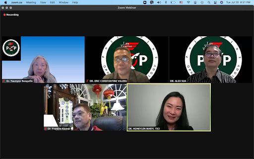

The first Clinical Ophthalmic Pathology Series (COPS) was held via Zoom on July 20, 2021 through the collaborative efforts of the Philippine Academy of Ophthalmology and Philippine Ophthalmic Pathology.
The session was moderated by Dr. Eric Valera with welcome remarks from the President of the Philippine Academy of Ophthalmology, Dr. Maria Margarita Lat-Luna and the Chairman of the Department of Ophthalmology, Cardinal Santos Medical Center (CSMC), Dr. Antonio Say.
The session started with Dr. Zoe M. Doroy, from CMSC who presented a case of 59 year-old-female with history of Stage 2 Ductal Carcinoma and progressive blurring of vision of the right eye associated with diplopia, and limitation of movement of the extraocular muscles.
Dr. Claro Ison (Neuroradiologist) then proceeded with his discussion of the MRI findings. His primary impression was meningioma but given the history of breast cancer, he would also consider metastasis and if it was possible, he might have also requested for a PET scan.
The discussion became even more interesting as Dr. Yasmyne Ronquillo (Ocular Pathologist) joined the discussion as a panelist. The case was then analyzed by Dr. Honeylen Teo (Ocular Oncologist) who pointed out that the clinical manifestations of the patient were pointing towards an orbital apex mass, which was compatible in the imaging findings of Dr. Ison. Her primary impression was a neoplasm vs. inflammation and emphasized the importance of doing a biopsy.
Dr. Franklin Kleiner (Orbit, Plastic & Reconstructive Surgeon) then proceeded with a review of related anatomy and presentation of his surgical approach via lateral orbitotomy with a bone window to obtain an adequate incisional biopsy of the mass.
Thereafter, Dr. Alex Sua (Ocular Pathologist) proceeded with describing the characteristics of the specimen, having a characteristic cord-like structures, nest-like pattern, central vacuole, which was surrounded by malignant cells and a tendency to form glandular material. All these pointed toward his diagnosis of Orbit Adenocarcinoma, Metastatic. A thorough discussion on GATA 3, mammaglobulin, estrogen receptor, progesterone receptor, Her2, and KI67 was included to further characterize the tissue and to identify the treatment approach.
The first COPS session offered great discussions from experts allowing us to learn from the case from different points of view.
    